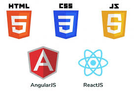

Front-end Development is the development or creation of a user interface using some markup languages and other tools.
It is basically the development of the user side where only user interaction will be counted.
It consists of the interface where buttons, texts, alignments, etc are involved and used by the user.

Back-end development means working on server-side software, which focuses on everything you can't see on a website.
Back-end developers ensure the website performs correctly, focusing on databases, back-end logic, application
programming interface (APIs), architecture, and servers.

Express is a node js web application framework that provides broad features for building web and mobile applications.
It is used to build a single page, multipage, and hybrid web application. It's a layer built on the top of the Node js
that helps manage servers and routes and is an easy-to-learn language.